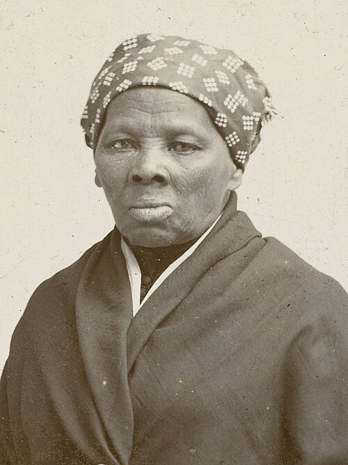
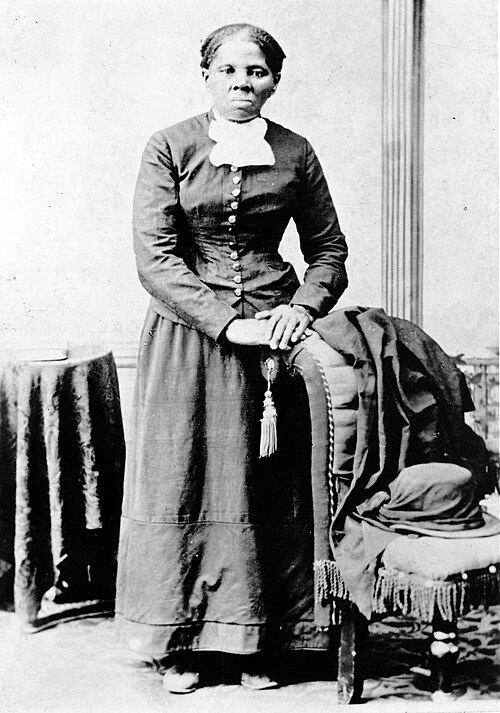

1944
Nasce em Birmingham, Alabama (EUA), em um contexto marcado pela segregação racial. Filha de professores e ativistas, cresce em um ambiente que valoriza profundamente a educação, a consciência política e o engajamento social desde a infância.

"Havia uma de duas coisas às quais eu tinha direito: liberdade ou morte."
Angela Davis
Foto: Funcrunch, via - Wikimedia Commons — CC BY-SA 4.0
Trajetoria inicial: origens, formação e engajamento social

Imagem em domínio público. Arquivo: Harriet Tubman (circa 1885).jpg. (CC BY-SA 4.0)
Nascida escravizada no estado de Maryland, nos Estados Unidos, Harriet Tubman cresceu em uma realidade marcada pela violência, pela exploração e pela negação de direitos básicos às pessoas negras. Desde a infância, foi submetida ao trabalho forçado e a condições extremamente duras, experiências que moldaram profundamente sua consciência sobre a injustiça da escravidão. Mesmo diante da repressão e dos riscos constantes, desenvolveu uma força interior extraordinária e uma fé inabalável na liberdade. Sua trajetória inicial foi marcada por sofrimento, resistência e coragem, elementos que mais tarde se tornariam centrais em sua atuação como uma das maiores lideranças abolicionistas da história.
Nos seus primeiros engajamentos, Angela Davis aproximou-se de movimentos estudantis e organizações políticas voltadas à luta contra o racismo e as desigualdades sociais. Ao longo de sua trajetória, realizou deslocamentos para diferentes cidades e países, buscando tanto formação acadêmica quanto participação ativa em causas sociais. Nesse percurso, enfrentou intensas dificuldades, como vigilância constante, perseguições políticas e repressão por suas ideias e posicionamentos. Esses desafios, longe de enfraquecê-la, fortaleceram seu compromisso com a justiça social e os direitos humanos, consolidando sua atuação como uma das principais vozes críticas de seu tempo.
Nasce em Birmingham, Alabama (EUA), em um contexto marcado pela segregação racial. Filha de professores e ativistas, cresce em um ambiente que valoriza profundamente a educação, a consciência política e o engajamento social desde a infância.
Ingressa na Brandeis University, onde estuda filosofia. Nesse período, entra em contato com importantes correntes de pensamento crítico, desenvolvendo uma visão mais aprofundada sobre racismo, desigualdade social e estruturas de poder.
Realiza intercâmbio na Europa, passando pela França e pela Alemanha, onde estuda na Universidade de Frankfurt. Nesse período, aprofunda seus estudos em teoria crítica e marxismo, ampliando sua formação intelectual.
Retorna aos Estados Unidos e continua sua formação na University of California, San Diego, onde faz pós-graduação em filosofia. Torna-se professora universitária e passa a ganhar destaque por suas ideias.
Leciona na UCLA, é afastada por suas ligações políticas e, posteriormente, acusada em um caso judicial. É presa por cerca de 18 meses, período em que surge uma mobilização internacional por sua libertação. Em 1972, é julgada e absolvida, tornando-se símbolo da luta contra injustiças sociais.
Retoma sua carreira acadêmica e passa a lecionar em universidades, consolidando-se como professora e intelectual. Publica obras importantes sobre racismo, desigualdade social e sistema prisional, alé além de atuar em movimentos sociais.
É acusada de envolvimento em um caso judicial relacionado a uma tentativa de resgate de presos. Por conta disso, entra para a lista dos mais procurados do FBI, tornando-se uma figura central em debates sobre justiça e perseguição política.
Permanece ativa em debates globais sobre racismo, feminismo e direitos humanos. Continua participando de conferências, escrevendo livros e sendo uma referência na luta por igualdade social.
Coragem, liberdade e compromisso com a libertação coletiva.

Foto: Philippe Halsman, 1974 — via Wikimedia Commons (domínio público)
Harriet Tubman é uma mulher extraordinária porque transformou sua própria busca por liberdade em uma missão coletiva de libertação. Nascida escravizada nos Estados Unidos, enfrentou desde cedo a violência, a exploração e a desumanização impostas pelo sistema escravista. Após conseguir escapar, poderia ter seguido sua vida em segurança, mas escolheu retornar diversas vezes ao Sul escravista para ajudar outras pessoas negras a conquistarem a liberdade por meio da Underground Railroad, uma rede secreta de rotas e abrigos. Sua coragem ultrapassou o medo da perseguição, da captura e da morte, tornando sua trajetória um dos maiores símbolos de resistência contra a escravidão.
Mesmo diante de perigos extremos, Harriet Tubman manteve-se firme em seu compromisso com a justiça e com a dignidade humana. Sua atuação não se limitou às fugas que liderou: durante a Guerra Civil Americana, também trabalhou como enfermeira, guia, espiã e colaboradora do Exército da União, contribuindo diretamente para a luta contra a escravidão. Após a guerra, continuou defendendo pessoas negras libertas, idosos e os direitos das mulheres. Sua história revela não apenas bravura individual, mas também solidariedade, liderança e compromisso com a transformação social. Mais do que uma figura histórica, Harriet Tubman permanece como símbolo de coragem, esperança e luta pela liberdade.
Harriet Tubman deixou como legado a defesa inegociável da liberdade, mostrando que a resistência pode nascer mesmo nos contextos mais violentos. Sua trajetória inspira gerações a enfrentar sistemas de opressão, proteger a dignidade humana e lutar por justiça coletiva.
Seu nome permanece associado à coragem de agir mesmo diante do medo, à solidariedade com os mais vulneráveis e à construção de caminhos para que outras pessoas também possam ser livres. Por isso, Harriet Tubman é lembrada não apenas como uma abolicionista, mas como uma das maiores referências mundiais de resistência, liderança e compromisso com os direitos humanos.
Livros, artigos e documentos históricos.
Biografia que apresenta a trajetória de Harriet Tubman desde sua vida sob a escravidão até sua atuação como abolicionista, condutora da Underground Railroad e defensora da liberdade. Link: https://www.amazon.com.br/Harriet-Tubman-Road-Freedom-Catherine/dp/0316155942
Obra biográfica que analisa a vida de Harriet Tubman, sua resistência à escravidão, suas missões de resgate e seu papel durante a Guerra Civil Americana. Link: https://www.amazon.com.br/Bound-Promised-Land-Harriet-American/dp/0345456289
Uma das primeiras biografias publicadas sobre Harriet Tubman, escrita ainda no século XIX, destacando sua coragem, fé e atuação na libertação de pessoas escravizadas. Link: https://www.gutenberg.org/ebooks/9999
Página oficial do Serviço Nacional de Parques dos Estados Unidos com informações históricas sobre Harriet Tubman, sua vida, seu legado e sua atuação na Underground Railroad. Link: https://www.nps.gov/people/harriet-tubman.htm
Biografia acessível que apresenta Harriet Tubman como abolicionista, ativista, enfermeira, espiã e defensora dos direitos das mulheres. Link: https://www.womenshistory.org/education-resources/biographies/harriet-tubman
Artigo enciclopédico com visão geral sobre a vida de Harriet Tubman, sua fuga da escravidão, sua atuação abolicionista e sua importância histórica. Link: https://www.britannica.com/biography/Harriet-Tubman
Acervo da Biblioteca do Congresso dos Estados Unidos com documentos, imagens e materiais históricos relacionados à vida e ao legado de Harriet Tubman. Link: https://www.loc.gov/search/?fa=subject:harriet+tubman
Artigo com visão geral sobre sua vida, sua fuga da escravidão, sua atuação na Underground Railroad, participação na Guerra Civil Americana e legado histórico. Link: https://en.wikipedia.org/wiki/Harriet_Tubman
Conheça outras trajetórias marcantes da luta por justiça e transformação social.

Foto: John Mathew Smith / www.celebrity-photos.com, via Wikimedia Commons.
Simbolo da luta contra a segregação racial nos Estados Unidos e referência mundial em coragem civil.
Saiba mais
Imagem: representação de Bartolina Sisa em cédula boliviana — via Banco Central da Bolívia.
Estrategista quilombola cuja resistência ajudou a marcar a luta negra por liberdade no Brasil lorem.
Saiba mais
Imagem: representação de Bartolina Sisa em cédula boliviana — via Banco Central da Bolívia.
Intelectual fundamental para os debates sobre feminismo negro, cultura e desigualdade racial no Brasil.
Saiba mais
Imagem: representação de Bartolina Sisa em cédula boliviana — via Banco Central da Bolívia.
Liderença indigêna e jurista que ampliou a presença dos povos originários nos espaços de decisão.
Saiba mais